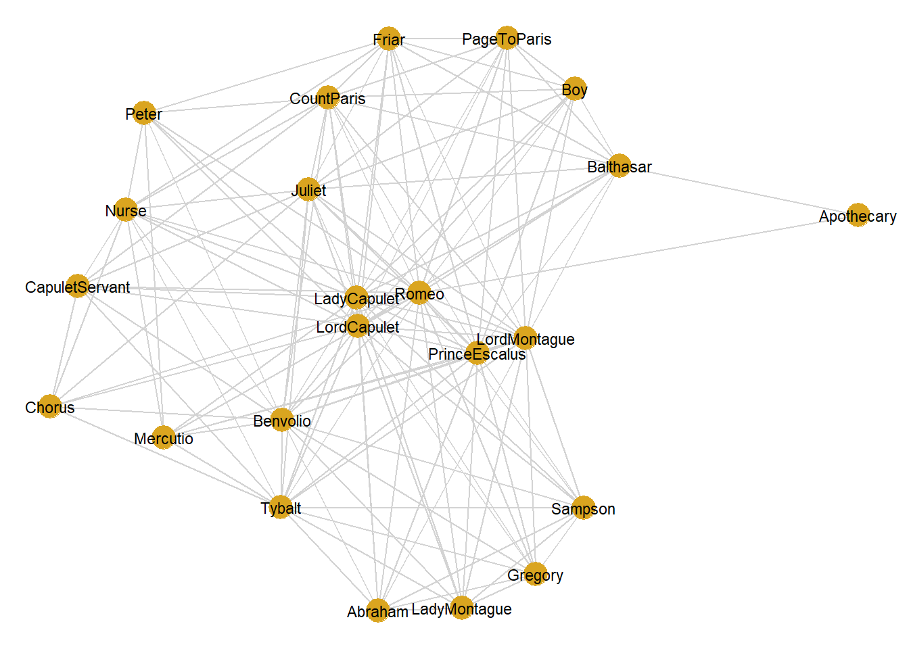
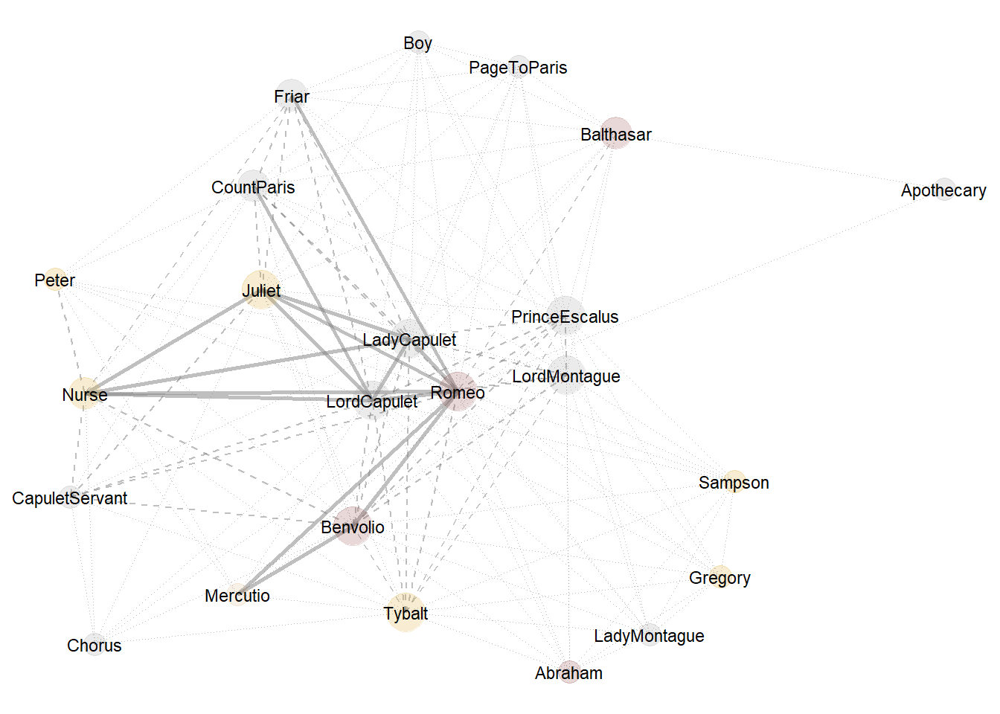

Network Analysis using R
Martin Schweinberger
2021-04-07

Introduction
This tutorial introduces network analysis using R. Network analysis is a method for visualization that can be used to represent various types of data. In addition to being a visualization technique, networks have certain statistical properties that can be compared which makes network analysis a very useful procedure. To this end, this tutorial shows how to create and modify network graphs. The entire R markdown document for the sections below can be downloaded here. This tutorial builds on a tutorial on plotting collocation networks by Guillaume Desagulier, a tutorial on network analysis by offered by Alice Miller from the Digital Observatory at the Queensland University of Technology, and this tutorial by Andreas Niekler and Gregor Wiedemann.
How can you display the relationship between different elements, be they authors, characters, or words?
The most common way to visualize such relationships are networks (Silge and Robinson 2017 : 131-137). Networks, also called graphs, consist of nodes (typically represented as dots) and edges (typically represented as lines) and they can be directed or undirected networks.
In directed networks, the direction of edges is captured. For instance, the exports of countries. In such cases the lines are directed and typically have arrows to indicate direction. The thickness of lines can also be utilized to encode information such as frequency of contact.
The example that we will be concerned with focuses on the first type of data as it is by far the most common way in which relationships are coded.To show how to create a network, we will have a look at the network that the characters in William Shakespeare’s Romeo and Juliet form.
Preparation and session set up
This tutorial is based on R. If you have not installed R or are new to it, you will find an introduction to and more information how to use R here. For this tutorials, we need to install certain packages from an R library so that the scripts shown below are executed without errors. Before turning to the code below, please install the packages by running the code below this paragraph. If you have already installed the packages mentioned below, then you can skip ahead and ignore this section. To install the necessary packages, simply run the following code - it may take some time (between 1 and 5 minutes to install all of the libraries so you do not need to worry if it takes some time).
# set options
options(stringsAsFactors = F) # no automatic data transformation
options("scipen" = 100, "digits" = 4) # suppress math annotation
# install libraries
install.packages(c("GGally", "network", "sna", "tidyverse", "knitr",
"kableExtra", "gutenbergr", "tm", "Matrix"))Once you have installed R, RStudio, and have also initiated the session by executing the code shown above, you are good to go.
1 Network Networks
This section shows how to create a network visualization with the network and the GGally packages. The network we will generate shows how often characters in William Shakespeare’s Romeo and Juliet occurred in the same scene. In a first step, we load the necessary packages from the library.
# activate packages
library(GGally)
library(network)The issue we want to investigate here relates to networks of personas in Shakespeare’s Romeo and Juliet and we thus load this famous work of fiction. Now that we have loaded the data, we need to split the data into scenes. Scenes during which personas leave or enter will have to be split too so that we arrive at a table that contains the personas that are present during a sub-scene.
# load data
rom <- read.delim("https://slcladal.github.io/data/romeo_tidy.txt", sep = "\t")
rome <- crossprod(table(rom[1:2]))
diag(rome) <- 0
romeo <- as.data.frame(rome)
romeo[1:5, 1:5]## BALTHASAR BENVOLIO CAPULET FIRST CITIZEN FIRST SERVANT
## BALTHASAR 0 0 1 0 0
## BENVOLIO 0 0 3 2 1
## CAPULET 1 3 0 1 2
## FIRST CITIZEN 0 2 1 0 0
## FIRST SERVANT 0 1 2 0 0The data shows how often a character has appeared with each other character in the play - only Friar Lawrence and Friar John were excluded because they only appear in one scene where they talk to each other.
In a next step, we create a network object from the matrix. In addition, we define vertex names as these will be used as labels in the network plot.
net = network::network(romeo,
directed = FALSE,
ignore.eval = FALSE,
names.eval = "weights")
# vertex names
network.vertex.names(net) = rownames(romeo)
net## Network attributes:
## vertices = 18
## directed = FALSE
## hyper = FALSE
## loops = FALSE
## multiple = FALSE
## bipartite = FALSE
## total edges= 106
## missing edges= 0
## non-missing edges= 106
##
## Vertex attribute names:
## vertex.names
##
## Edge attribute names:
## weightsUnfortunately, network object are somewhat obscure in that they can not be displayed as simple data frames.
However, this does not matter at this point and we continue by visualizing the network in a simple network plot using the ggnet2 function.
ggnet2(net,
size = 6,
color = "goldenrod",
edge.size = .5,
edge.color = "lightgrey",
label = TRUE,
label.size = 3)
The basic network shown above only shows who has co-occurred with whom but it is not really informative. Therefore, we add information to the network object.
To add information to a simple network graph, we create a new variable. This variable shows to which family each of the characters belong. To do this, we create a separate vector for each family which holds the characters that are members of this family. Then, we create a variable in the network object called “Family” which represents the family which the characters belong to.
# define colors (by family)
mon <- c("ABRAM", "BALTHASAR", "BENVOLIO", "LADY MONTAGUE", "MONTAGUE", "ROMEO")
cap <- c("CAPULET", "CAPULET’S COUSIN", "FIRST SERVANT", "GREGORY", "JULIET",
"LADY CAPULET", "NURSE", "PETER", "SAMPSON", "TYBALT")
oth <- c("APOTHECARY", "CHORUS", "FIRST CITIZEN", "FIRST MUSICIAN", "FIRST WATCH",
"FRIAR JOHN" , "FRIAR LAWRENCE", "MERCUTIO", "PAGE", "PARIS", "PRINCE",
"SECOND MUSICIAN", "SECOND SERVANT", "SECOND WATCH", "SERVANT", "THIRD MUSICIAN")
# add color by group
net %v% "Family" = ifelse(network.vertex.names(net) %in% cap, "Capulet",
ifelse(network.vertex.names(net) %in% mon, "Montague", "other"))We can now use the family variable to define a color so that each character can be associated with his or her family by coloring. In addition, we specify the edge attributes so that the thickness and the type of a line represent how often characters have co-occurred. Characters that co-occur frequently are connected by thick, straight, solid lines whereas characters that co-occurred together only infrequently are connected by thin, dotted lines.
# modify color
net %v% "color" = ifelse(net %v% "Family" == "Capulet", "goldenrod",
ifelse(net %v% "Family" == "Montague", "indianred4","gray60"))
# rescale edge size
network::set.edge.attribute(net, "weights", ifelse(net %e% "weights" <= 1, 0.25,
ifelse(net %e% "weights" <= 3, .5, 1)))
# define line type
network::set.edge.attribute(net, "lty", ifelse(net %e% "weights" == 0.25, 3,
ifelse(net %e% "weights" == .5, 2, 1)))We now visualize the network again but include information such as who belongs to which family (the translucent circles around the names) and how often they have co-occurred (thickness any type of the lines). We also specify alpha values which make lines and circles more or less translucent (the higher the value, the more translucent are the lines and circles).
ggnet2(net,
color = "color",
label = TRUE,
label.size = 3,
alpha = 0.2,
size = "degree",
size.cut = 3,
edge.size = "weights",
edge.lty = "lty",
edge.alpha = 0.5) +
guides(color = FALSE, size = FALSE)
We have now plotted the network of characters in Shakespeare’s Romeo and Juliet and we have added additional information to this plot. The characters are shown by name and the color behind their name informs us about which family they belong to (Capulet = golden, Montague = red, other = gray). The linetype and line thickness both provide information on how frequently characters interacted: slim dotted gray lines indicate that the characters only co-occurred once, dashed gray lines indicate that the characters co-occurred up to three times and thick solid gray lines show that the characters co-occured more than 3 times together.
2 Quanteda Networks
The quanteda package contains many very useful functions for analyzing texts. Among these functions is the textplot_network function which provides a very handy way to display networks. The advantage of the network plots provided by or generated with the quanteda package is that you can create them with very little code. However, this comes at a cost as these visualizations cannot be modified easily (which means that their design is not very flexible compared to other methods for generating network visualizations).
In a first step, we transform the text vectors of the romeo data into a document-feature matrix using the dfm function.
# load package
library(quanteda)
# create a document feature matrix
romeo_dfm <- quanteda::as.dfm(romeo)
# create feature co-occurrence matrix
romeo_fcm <- quanteda::fcm(romeo_dfm)
# inspect data
head(romeo_fcm)## Feature co-occurrence matrix of: 6 by 6 features.
## features
## features BALTHASAR BENVOLIO CAPULET FIRST CITIZEN FIRST SERVANT
## BALTHASAR 1 25 31 11 6
## BENVOLIO 0 39 93 39 27
## CAPULET 0 0 65 42 39
## FIRST CITIZEN 0 0 0 6 10
## FIRST SERVANT 0 0 0 0 3
## FRIAR LAWRENCE 0 0 0 0 0
## features
## features FRIAR LAWRENCE
## BALTHASAR 20
## BENVOLIO 53
## CAPULET 74
## FIRST CITIZEN 18
## FIRST SERVANT 17
## FRIAR LAWRENCE 15This feature-co-occurrence matrix can then serve as the input for the textplot_network function which already generates a nice network graph. The network graph can then be modified or customized easily by defining the arguments of the textplot_network function. To see how and which arguments can be modified, you can use ?textplot_network.
quanteda::textplot_network(romeo_fcm,
min_freq = 10,
edge_alpha = 0.2,
edge_color = "orange",
edge_size = 5)
3 Tidy Networks
A great way to generate network graphs is to combine functions from the igraph, the ggraph, and the tidygraph packages. The advantages are that the syntax of for creating the networks aligns with the tidyverse style of writing R and that the graphs can eb modified very easily.
To generate network graphs in this way, we first load the required packages.
library(igraph)
library(ggraph)
library(tidygraph)
library(tidyverse)In a next step, we define the nodes and we can also add information about the odes that we can use later on (suh as frequency information).
va <- romeo %>%
dplyr::mutate(Persona = rownames(.),
Occurrences = rowSums(.)) %>%
dplyr::select(Persona, Occurrences) %>%
dplyr::filter(!str_detect(Persona, "SCENE"))Now, we define the edges, i.e., the connections between nodes and, again, we can add information in separate variables that we can use later on.
ed <- romeo %>%
dplyr::mutate(from = rownames(.)) %>%
tidyr::gather(to, Frequency, BALTHASAR:TYBALT) %>%
dplyr::mutate(Frequency = ifelse(Frequency == 0, NA, Frequency))Now that we have generated tables for the edges and the nodes, we can generate a graph object.
ig <- graph_from_data_frame(d=ed, vertices=va, directed = FALSE)We will also add labels to the nodes as follows:
tg <- tidygraph::as_tbl_graph(ig) %>%
activate(nodes) %>%
mutate(label=name)Now, we use the number of occurrences to define Vertice size (or node size)
v.size <- V(tg)$Occurrences
# inspect
v.size## [1] 9 34 46 14 12 20 36 45 15 22 38 21 9 22 54 16 15 22We can also use the frequency information to define weights
E(tg)$weight <- E(tg)$Frequency
# inspect weights
head(E(tg)$weight, 10)## [1] NA NA 1 NA NA 1 1 1 NA 1Finally, we define colors (by family).
# define colors (by family)
mon <- c("ABRAM", "BALTHASAR", "BENVOLIO", "LADY MONTAGUE", "MONTAGUE", "ROMEO")
cap <- c("CAPULET", "CAPULET’S COUSIN", "FIRST SERVANT", "GREGORY", "JULIET", "LADY CAPULET", "NURSE", "PETER", "SAMPSON", "TYBALT")
oth <- c("APOTHECARY", "CHORUS", "FIRST CITIZEN", "FIRST MUSICIAN", "FIRST WATCH", "FRIAR JOHN" , "FRIAR LAWRENCE", "MERCUTIO", "PAGE", "PARIS", "PRINCE", "SECOND MUSICIAN", "SECOND SERVANT", "SECOND WATCH", "SERVANT", "THIRD MUSICIAN")
# create color vectors
Family <- dplyr::case_when(names(evcent(tg)$vector) %in% mon ~ "MONTAGUE",
names(evcent(tg)$vector) %in% cap ~ "CAPULET",
TRUE ~ "Other")
# inspect colors
Family## [1] "MONTAGUE" "MONTAGUE" "CAPULET" "Other" "CAPULET" "Other"
## [7] "CAPULET" "CAPULET" "Other" "MONTAGUE" "CAPULET" "Other"
## [13] "CAPULET" "Other" "MONTAGUE" "Other" "Other" "CAPULET"Now, that we c´have created the different objects and defined their properties, we visualize the network.
# set seed
set.seed(12345)
# edge size shows frequency of co-occurrence
tg %>%
ggraph(layout = "fr") +
geom_edge_arc(colour= "gray50",
lineend = "round",
strength = .1,
aes(edge_width = weight,
alpha = weight)) +
geom_node_point(size=log(v.size)*2,
aes(color=Family)) +
geom_node_text(aes(label = name),
repel = TRUE,
point.padding = unit(0.2, "lines"),
size=sqrt(v.size),
colour="gray10") +
scale_edge_width(range = c(0, 2.5)) +
scale_edge_alpha(range = c(0, .3)) +
theme_graph(background = "white") +
theme(legend.position = "top") +
guides(edge_width = FALSE,
edge_alpha = FALSE)
4 iGraph Networks
Wiedemann and Niekler (2017) have written a very recommendable tutorial on co-occurrence analysis and they propose an alternative for generating complex network visualization for co-occurrences. Their approach is to create and customize a graph object based on the iGraph package. To see how to create sophisticated network graphs using the iGraph package, see this tutorial on analyzing collocations or this tutorial.
We have reached the end of this tutorial and you now know how to create and modify networks in R and how you can highlight aspects of your data.
Citation & Session Info
Schweinberger, Martin. 2021. Network Analysis using R. Brisbane: The University of Queensland. url: https://slcladal.github.io/net.html (Version 2021.04.07).
@manual{schweinberger2021net,
author = {Schweinberger, Martin},
title = {Network Analysis using R},
note = {https://slcladal.github.io/net.html},
year = {2021},
organization = "The University of Queensland, Australia. School of Languages and Cultures},
address = {Brisbane},
edition = {2021.04.07}
}sessionInfo()## R version 4.0.3 (2020-10-10)
## Platform: x86_64-w64-mingw32/x64 (64-bit)
## Running under: Windows 10 x64 (build 19041)
##
## Matrix products: default
##
## locale:
## [1] LC_COLLATE=German_Germany.1252 LC_CTYPE=German_Germany.1252
## [3] LC_MONETARY=German_Germany.1252 LC_NUMERIC=C
## [5] LC_TIME=German_Germany.1252
##
## attached base packages:
## [1] stats graphics grDevices utils datasets methods base
##
## other attached packages:
## [1] forcats_0.5.0 stringr_1.4.0 dplyr_1.0.2 purrr_0.3.4
## [5] readr_1.4.0 tidyr_1.1.2 tibble_3.0.4 tidyverse_1.3.0
## [9] tidygraph_1.2.0 ggraph_2.0.5 igraph_1.2.6 quanteda_2.1.2
## [13] network_1.16.1 GGally_2.0.0 ggplot2_3.3.3 DT_0.16
## [17] kableExtra_1.3.1 knitr_1.30
##
## loaded via a namespace (and not attached):
## [1] viridis_0.5.1 httr_1.4.2 jsonlite_1.7.1
## [4] viridisLite_0.3.0 modelr_0.1.8 RcppParallel_5.0.2
## [7] assertthat_0.2.1 cellranger_1.1.0 yaml_2.2.1
## [10] ggrepel_0.8.2 pillar_1.4.6 backports_1.1.10
## [13] lattice_0.20-41 glue_1.4.2 digest_0.6.27
## [16] RColorBrewer_1.1-2 polyclip_1.10-0 rvest_0.3.6
## [19] colorspace_1.4-1 htmltools_0.5.0 Matrix_1.2-18
## [22] plyr_1.8.6 pkgconfig_2.0.3 broom_0.7.2
## [25] haven_2.3.1 scales_1.1.1 webshot_0.5.2
## [28] tweenr_1.0.1 sna_2.6 ggforce_0.3.2
## [31] generics_0.1.0 farver_2.0.3 usethis_1.6.3
## [34] ellipsis_0.3.1 withr_2.3.0 cli_2.1.0
## [37] readxl_1.3.1 magrittr_1.5 crayon_1.3.4
## [40] statnet.common_4.4.1 evaluate_0.14 stopwords_2.0
## [43] fansi_0.4.1 fs_1.5.0 MASS_7.3-53
## [46] xml2_1.3.2 tools_4.0.3 data.table_1.13.2
## [49] hms_0.5.3 lifecycle_0.2.0 reprex_0.3.0
## [52] munsell_0.5.0 compiler_4.0.3 rlang_0.4.8
## [55] grid_4.0.3 rstudioapi_0.11 htmlwidgets_1.5.3
## [58] crosstalk_1.1.0.1 labeling_0.4.2 rmarkdown_2.5
## [61] gtable_0.3.0 DBI_1.1.0 reshape_0.8.8
## [64] graphlayouts_0.7.1 R6_2.5.0 lubridate_1.7.9
## [67] gridExtra_2.3 rle_0.9.2 fastmatch_1.1-0
## [70] stringi_1.5.3 Rcpp_1.0.5 vctrs_0.3.4
## [73] dbplyr_2.0.0 tidyselect_1.1.0 xfun_0.19
## [76] coda_0.19-4References
Silge, Julia, and David Robinson. 2017. Text Mining with R: A Tidy Approach. " O’Reilly Media, Inc.".
Wiedemann, Gregor, and Andreas Niekler. 2017. “Hands-on: A Five Day Text Mining Course for Humanists and Social Scientists in R.” In Proceedings of the Workshop on Teaching NLP for Digital Humanities (Teach4DH2017), Berlin, Germany, September 12, 2017., 57–65. http://ceur-ws.org/Vol-1918/wiedemann.pdf.